AI-Powered ADHD App for Parents

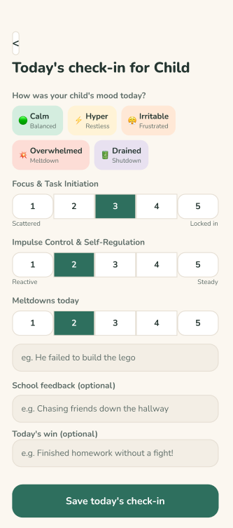
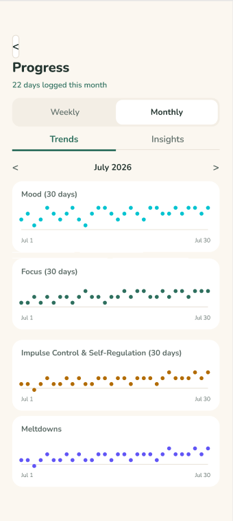
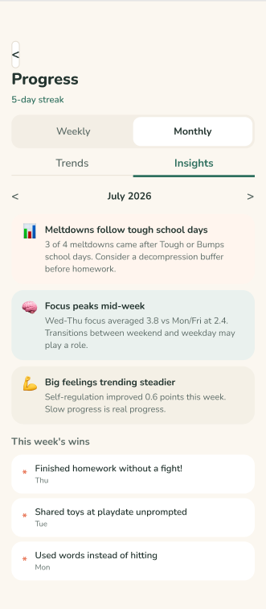
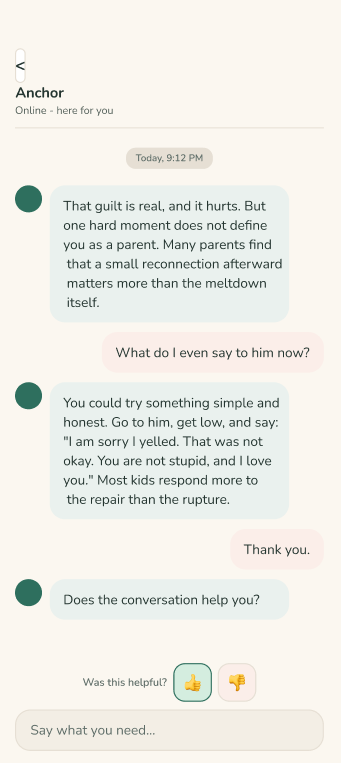
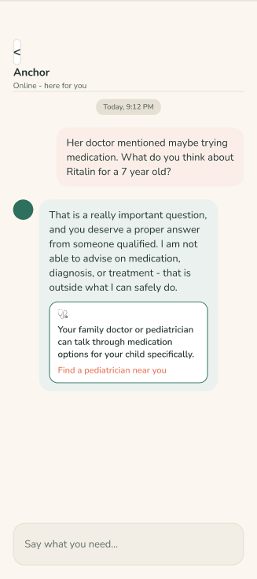
MVP Prototype
Context & Problem
Parents raising a child with ADHD carry an invisible daily load — tracking behavior with no system, arriving at scarce and costly medical appointments with only vague impressions, and cycling through guilt and exhaustion with no support built for them. Every existing ADHD tool is designed for the child or the clinician, leaving the person who most needs help — the overwhelmed parent — entirely unserved.
My Role
Product Manager, working solo end-to-end as the capstone project for BrainStation's Product Management certificate — covering discovery, strategy, prioritization, backlog authorship, and prototype validation.
Discovery & Research
I designed and ran a 17-question user survey, collecting 19 data entities (9 rated high-quality). Using affinity mapping and thematic analysis, I synthesized the responses into 5 core themes — from parents who don't track behavior at all, to the emotional guilt-exhaustion loop, to the "blurry mirror" of showing up to medical appointments with impressions instead of data.
From there, I built 5 customer personas spanning early adopters (e.g., "Jin," who already tracks manually but needs a better tool) through to a deliberately excluded segment ("Lena," who isn't a near-term adoption target).
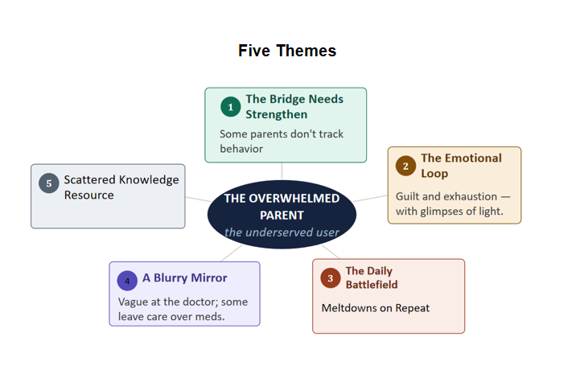
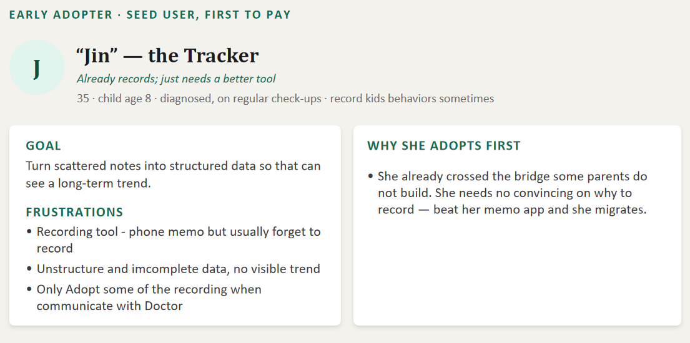
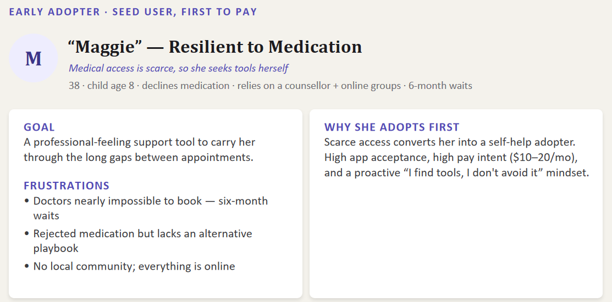
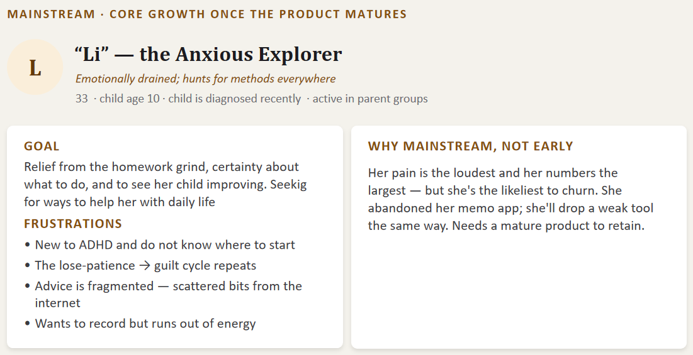
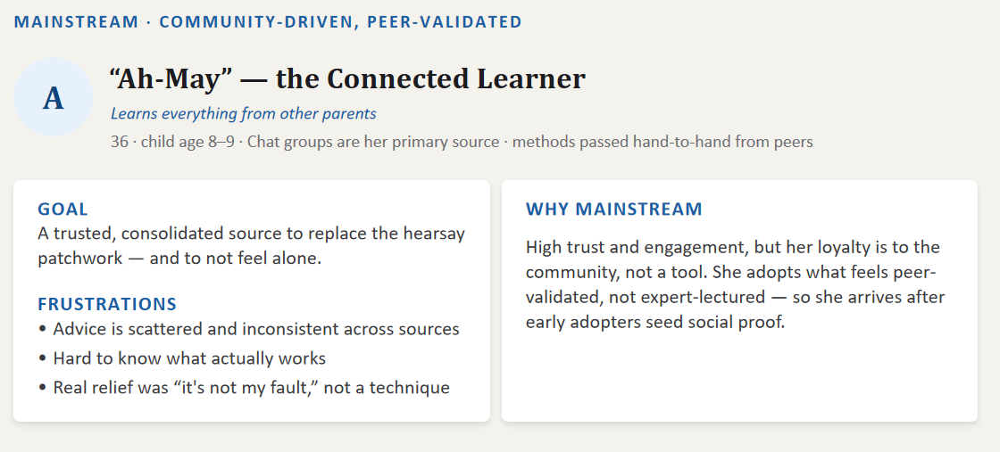
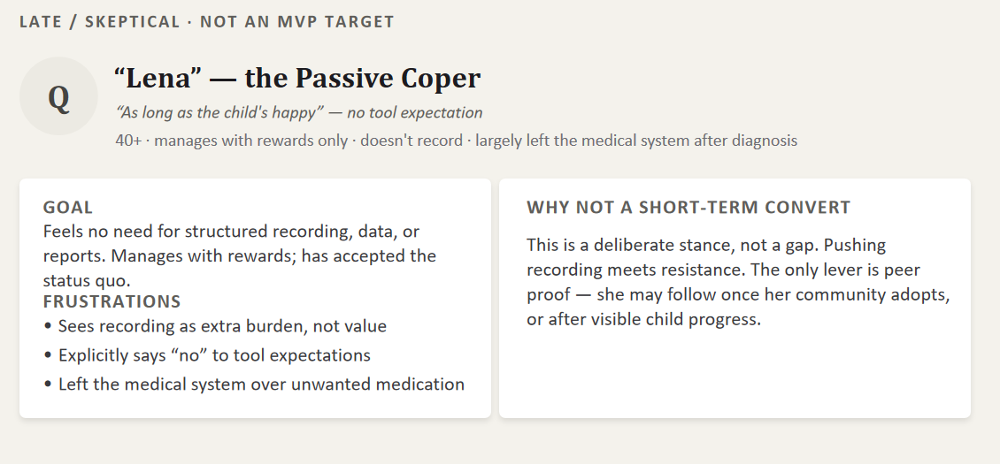
Themes and Personas
Strategy & Prioritization
I defined the product's value proposition — a parent-first ADHD app combining daily check-ins, visible progress, AI guidance, and emotional support — and benchmarked it against three competitors (Joon, Tiimo, Inflow) using a value-proposition table to confirm none served the parent directly.
I validated three value hypotheses (daily logging, AI assistant, knowledge library), then scoped the MVP using MoSCoW prioritization — must-haves included a sub-30-second daily check-in, behavior/mood trend visualization, and an AI assistant with strict compliance guardrails (no clinical advice, crisis-resource fallback, PIPEDA-compliant consent). I explicitly deferred a child-facing gamified experience and community features to a later release.
I set two OKRs to validate the riskiest assumptions: proving parents would sustain the logging habit, and proving the AI companion delivered real emotional support — each with concrete, measurable key results.
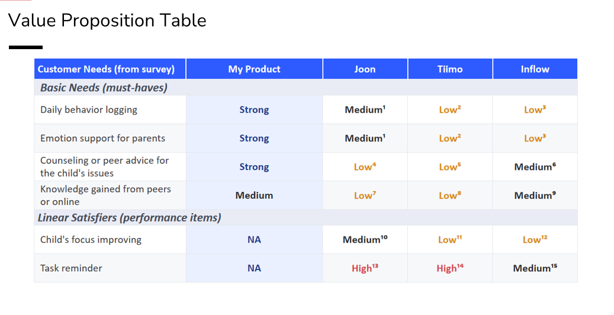
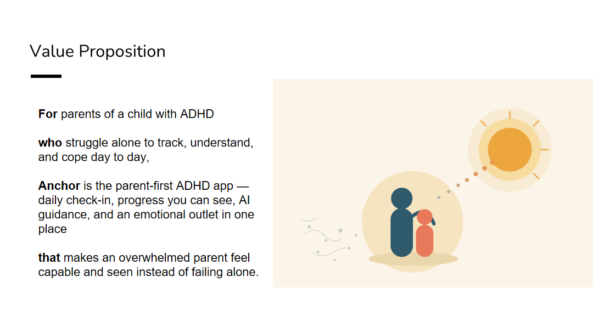
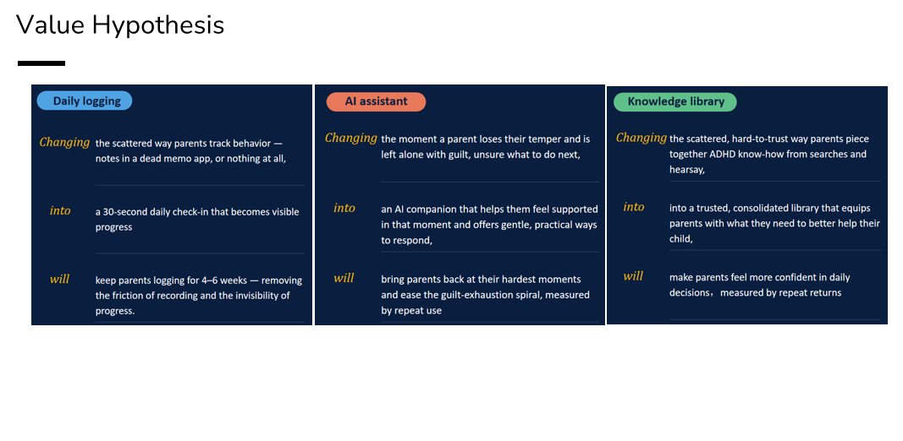
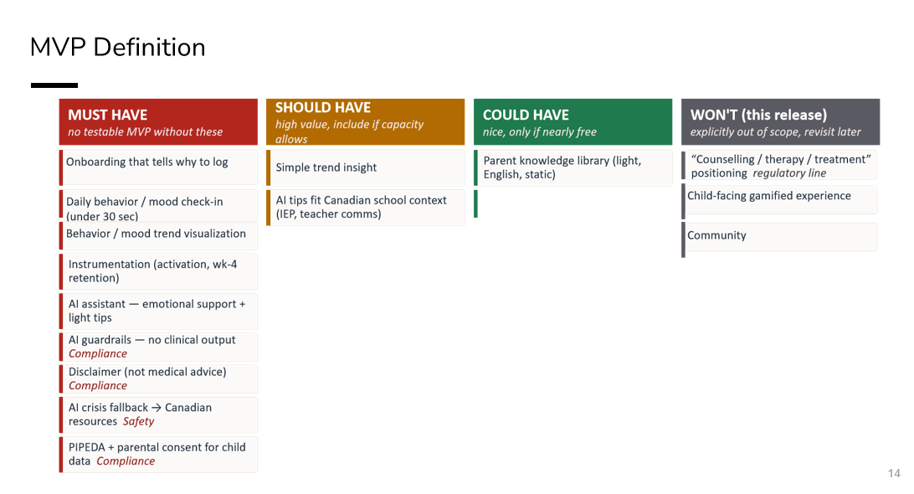
Value Hypotheses and MVP
Execution
I built an 18-week roadmap sequencing strategy/approvals, design, development, QA/safety, and go-to-market as parallel workstreams with defined milestones. I authored 7 epics and 20+ user stories with Given/When/Then acceptance criteria in a Jira backlog, then partnered on a clickable Figma prototype covering the core check-in flow, progress visualization, and AI companion conversation — including a crisis-detection flow that redirects to real Canadian support resources.


Roadmap and User Stories
Outcomes / Target Metrics
As a capstone project, this didn't ship to real users, so these are the target metrics I defined rather than achieved results:
- ≥60% of registered parents completing a first check-in and returning within week 1 (activation)
- ≥40% of activated parents still logging 3+ days/week at week 4 (North Star retention)
- ≥50% of parents who use the AI companion during a high-stress moment returning to use it again